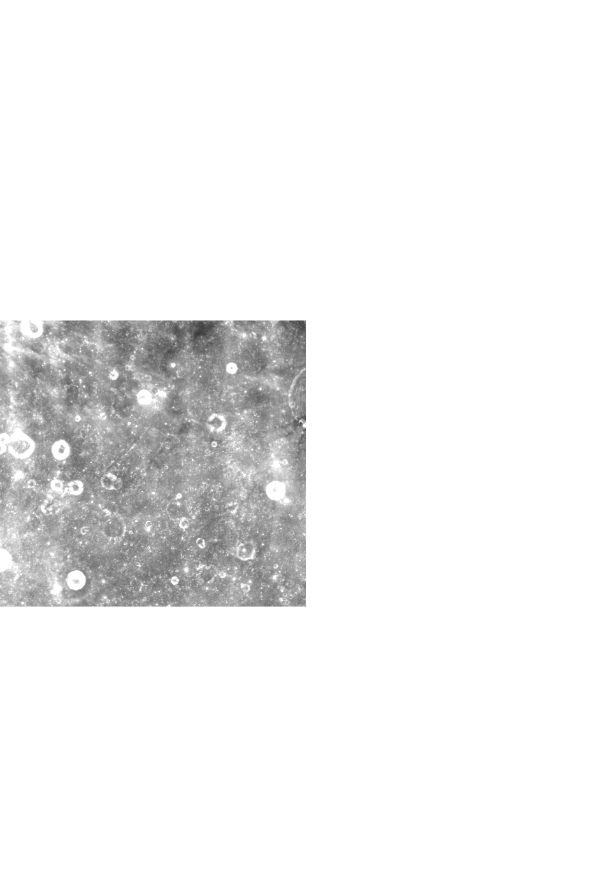
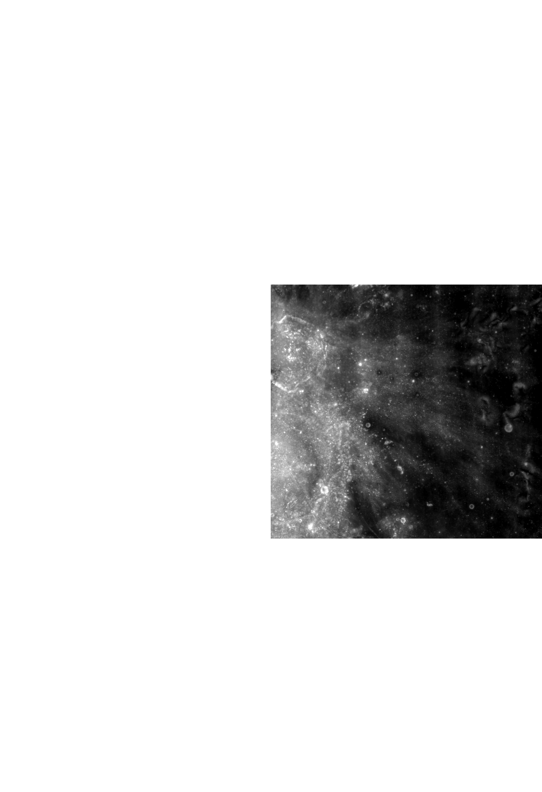
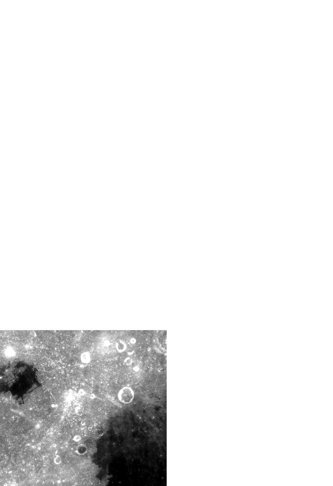
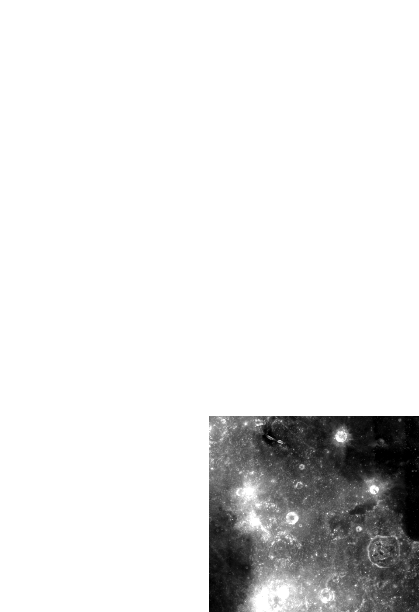
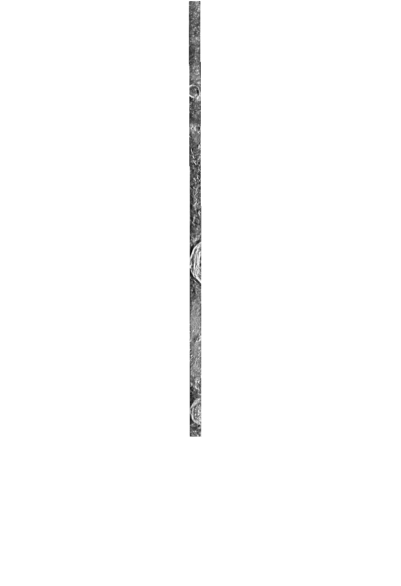

ROI_066
训练集
- 划分
- 训练集
- patch 对
- 130
- 中心
- 2.8°N，67.7°W
- 范围
- 2.3°S–7.9°N，68.0°W–67.4°W
- 控制点
- 30 对（标注规程）
| 光学原图 CE-2 DOM | SAR 原图 Mini-RF | 重叠区影像 光学、SAR 各一幅 | |
|---|---|---|---|
| 产品 | CE2_GRAS_DOM_07m_G215_03N071W_ACE2_GRAS_DOM_07m_G216_03N063W_ACE2_GRAS_DOM_07m_H115_03S071W_ACE2_GRAS_DOM_07m_H116_03S063W_A | LSZ_01817_2CD_EKU_07N292_V1 | — |
| 成像时刻（UTC） | — | 2009-11-18 17:44:07 | — |
| 投影 | G215：Mercator，标准纬线 7° G216：Mercator，标准纬线 7° H115：Mercator，标准纬线 -7° H116：Mercator，标准纬线 -7° | 等距圆柱，中心经度 180° | Mercator，标准纬线 -7° |
| 像元 | 7 m | 7.4032 m | 7.5 m |
| 图像尺寸 | G215：32,348 × 30,274 像素 G216：32,348 × 30,274 像素 H115：32,348 × 30,273 像素 H116：32,348 × 30,273 像素 | 1,897 × 66,473 像素 | 2,230 × 41,006 像素 |
| 入射角 | — | 52.28° | — |
| 视向 | — | 左视 | — |
重叠区影像：光学与 SAR 公共覆盖区外扩 1.2 倍，两者重采样到 7.5 m 的同一网格；patch 从这两幅上切出。
原始产品





光学原图
SAR 原图
重叠区影像


每 114 × 114 像素取均值，黑色是没有数据的区域。